FreenetDocumentationZeroNetPrevious page: FreenetIndex page: DocumentationNext page: ZeroNetInvisible Internet Project (I2P)

I2P over Tor. Tunneling the I2P Anonymizing Network over the Tor
Anonymizing Network. Connection Schema:
Tor -> I2P -> Destination
Introduction
 COMMUNITY SUPPORT ONLY : THIS WHOLE WIKI
PAGE is only supported by the community. Whonix
developers are very unlikely to provide free support
for this content. See Community Support for further information,
including implications and possible alternatives.
COMMUNITY SUPPORT ONLY : THIS WHOLE WIKI
PAGE is only supported by the community. Whonix
developers are very unlikely to provide free support
for this content. See Community Support for further information,
including implications and possible alternatives.
Network
The Invisible Internet Project (I2P) homepage provides a simple overview of the protocol:
I2P is an anonymous network built on top of the internet. It allows users to create and access content and build online communities on a network that is both distributed and dynamic. It is intended to protect communication and resist monitoring by third parties such as ISPs.
Aside from anonymizing traffic within the network, I2P functions with the same capabilities as the Internet, however its design and decentralization create a censorship resistant environment for the free-flow of information.
Mirrored sites hosted on the network allow access to news outlets and other resources in areas where information is being filtered or denied. Online communities wishing to organize in restrictive environments can do so anonymously to mitigate political threat and protect each other.
The I2P anonymous network exposes a simple layer that applications can use to anonymously and securely send messages to each other through "tunnels". The network itself is strictly message-based (IP), but there is a library available to allow reliable streaming communication on top of it (TCP). All communication is encrypted end-to-end -- in total there are four layers of encryption used when sending a message -- and even the end points ("destinations") are cryptographic identifiers (essentially a pair of public keys). [1]
This design is known as garlic routing which is a variant of onion routing (used in the Tor network) and benefits from the research on the latter but makes some different tradeoffs. [2] Each client application has their own I2P 'router' that finds other clients by querying against the fully distributed 'network database' - a custom structured distributed hash table (DHT) based on the Kademlia algorithm. Every router transports traffic for its peers which it uses as cover traffic for its own. To learn more about I2P technical details, see here.
In contrast to the Tor network, I2P is focused on creating a community around P2P darknet services rather than providing "outproxies"(exits) to the clearnet. The I2P development team is an open group that welcomes all parties who are interested in getting involved. All the code is open source. The core I2P Software Development Kit (SDK) and the current router implementation is accomplished in Java, [3] and there is a simple socket based API for accessing the network from other languages (with a C library available, and both Python and Perl in development). The network is actively being developed and has not yet reached the 1.0 release, but the current roadmap describes their active schedule.
Tor vs I2P
Many of Tor's concepts have (virtual) equivalents in I2P, despite the terminology being somewhat different.
Tor Terminology |
I2P Equivalent |
|---|---|
Cell |
Message |
Circuit |
Tunnel |
Client |
Router or Client |
Directory |
NetDb |
Directory Server |
Floodfill Router |
Fast Peers |
|
Entry Node |
Inproxy |
Exit Node |
Outproxy |
Hidden Service, Eepsite or Destination |
|
Hidden Service Descriptor |
LeaseSet |
Introduction Point |
Inbound Gateway |
Node |
Router |
Onion Proxy |
I2PTunnel Client (more or less) |
Relay |
Router |
Rendezvous Point |
Similar to Inbound Gateway + Outbound Endpoint |
Router Descriptor |
RouterInfo |
Server |
Router |
Single Onion Service |
I2P 0-hop Tunnel [8] |
The I2P comparison page notes the relative strengths of Tor and I2P; those are summarized below.
Tor's primary strengths are: a larger user base; greater academic interest and research; significant funding; a large development team; greater resistance to state-level censorship (TLS transport and bridges); large number of exit nodes; better memory usage; thorough documentation; low client bandwidth overhead; higher throughput and lower latency. [4]
In comparison, I2P's primary strengths are: optimization for hidden services; a fully distributed design; better peer selection; varied and untrusted directory servers; peer-to-peer friendly nature; improved load balancing and resilience; unidirectional tunnels; [9] protection against client activity detection; short-lived tunnels; [10] low bandwidth overhead for full peers; TCP and UDP transports; and being based on the Java programming language. [4]
How-to: Use I2P in Whonix
There are two methods of using I2P in Whonix:
- Inproxies inside Whonix-Workstation; or
- I2P Client inside Whonix-Workstation (recommended)
The inproxy method is better suited for causal use of I2P. In this instance, users just want to anonymously view an Eepsite and are not concerned about eavesdroppers so long as anonymity is assured.
It is safer to use the I2P client inside Whonix, since all I2P traffic is tunneled through Tor and access is fully featured. This is a little more difficult than installing I2P the ordinary way, that is using I2P in the clear, not over Tor.
Readers who are considering using I2P in Whonix are suggested to review the related forum thread.
Inproxies inside Whonix-Workstation
There are several I2P inproxies and they have similar functionality to Tor2web. [11] Simply use Tor Browser which is installed in Whonix by default to directly access the I2P proxies listed.
Although this is the easiest method, on the downside end-to-end encryption is lost when connecting to the eepsites. This is not the case when I2P is installed directly inside Whonix-Workstation™ or if I2P is used in the ordinary way. Further, potentially Tor Exit Nodes can Eavesdrop on Communications if an inproxy uses plain http, since it is an unencrypted connection. This risk is averted if the inproxy uses https or is reachable via an onion service. In any case, the I2P inproxy administrator can see all of your traffic in the I2P network and it is impossible to prevent that.
Example of I2P inproxy domains might be found in (or might be not if removed or down):
- https://mk16.de/
- https://www.awxcnx.de/
- https://web.archive.org/web/20170411140534/https://www.hiddenservice.net/
I2P Client inside Whonix-Workstation
Introduction
The preferred configuration is to connect to Tor before I2P inside
Whonix-Workstation: user -> Tor ->
I2P -> Internet
Before configuring this tunnel link, it is recommended to read the following related wiki entries for general educational purposes on tunnel links. There is no need to apply any instructions from these wiki entries.
Post-Tor I2P Tunnel Effects
Domain |
Information |
|---|---|
Advantages |
|
Disadvantages |
|
Warning: No Stream-isolation Support |
|
Installation and Setup
 Note:
Note:
- When following these instructions, the
about:configchanges in Tor Browser worsen the browser fingerprint. This is unavoidable if the user intents to use I2P. The modified Tor Browser should only be used for I2P purposes.- In Qubes-Whonix™, a
separate
anon-whonix-I2PApp Qubes is recommended.
- In Qubes-Whonix™, a
separate
 Security Warning: Adding a third-party repository
and/or installing third-party software allows the vendor to replace any
software on your system, including but not limited to the installation
of malware, file deletion, and
data harvesting. Proceed at your own risk! See also Foreign
Sources for further information. For greater safety, users adding
third-party repositories should always use Multiple
Whonix-Workstation™ to compartmentalize VMs with
additional software.
Security Warning: Adding a third-party repository
and/or installing third-party software allows the vendor to replace any
software on your system, including but not limited to the installation
of malware, file deletion, and
data harvesting. Proceed at your own risk! See also Foreign
Sources for further information. For greater safety, users adding
third-party repositories should always use Multiple
Whonix-Workstation™ to compartmentalize VMs with
additional software.
 Documentation in the Whonix wiki provides guidance on adding third-party
software from various upstream repositories. This is especially useful
since upstream often includes generic instructions for different Linux
distributions, which may be complex for users to follow. Additionally,
documentation in Whonix usually places a higher emphasis on security and
verifying digital software signatures.
Documentation in the Whonix wiki provides guidance on adding third-party
software from various upstream repositories. This is especially useful
since upstream often includes generic instructions for different Linux
distributions, which may be complex for users to follow. Additionally,
documentation in Whonix usually places a higher emphasis on security and
verifying digital software signatures.
The instructions provided here serve as a "translation layer" from upstream documentation to Whonix, offering assistance in most scenarios. Nevertheless, it's important to recognize that upstream repositories and software may change over time. Consequently, the documentation on this wiki might require occasional updates, such as revised signing key fingerprints, to remain current and accurate.
Please note, this is a general wiki template and may not apply to all upstream documentation scenarios.
Users encountering issues, such as signing key problems, are advised
to follow the Self
Support First Policy and engage in Generic
Bug Reproduction. This involves attempting to replicate the issue on
Debian trixie, and contacting upstream directly if the
issue can be reproduced, as such problems are likely unspecific to Whonix. In most
cases, Whonix is not responsible for, nor capable of resolving, issues
stemming from third-party software.
For further information, refer to Introduction, User Expectations - What Documentation Is and What It Is Not.
Should the user encounter bugs related to third-party software, it is advisable to report these issues to the respective upstream projects. Additionally, users are encouraged to share links to upstream bug reports in the Whonix forums and/or make edits to this wiki page. For example, if there are outdated links or key fingerprints that need updating, please feel free to make the necessary changes. Contributions aimed at maintaining the accuracy and currency of information are highly valued. These updates not only improve the quality of the wiki but also serve as a useful resource for other users.
The Whonix wiki is an open platform where everyone is welcome to contribute improvements and edits, with or without an account. Edits to this wiki are subject to moderation, so contributors should not worry about making mistakes. Your edits will be reviewed before being made public, ensuring the integrity and accuracy of the information provided.
1. Add the I2P signing key.
(Qubes-Whonix:
whonix-workstation-18-clone-1 Template).
Securely download the key.
If you are using
Whonix-Workstation™ (anon-whonix), run.
scurl-download --tlsv1.2 https://geti2p.net/_static/i2p-archive-keyring.gpg
If you are using a Qubes Template
(whonix-workstation-18), run. [14]
[15]
http_proxy=http://127.0.0.1:8082 https_proxy=http://127.0.0.1:8082 scurl-download --tlsv1.2 https://geti2p.net/_static/i2p-archive-keyring.gpg
Display the key's fingerprint. [16]
gpg --keyid-format long --import --import-options show-only --with-fingerprint i2p-archive-keyring.gpg
Verify the output.
- Digital signatures are a tool enhancing download security. They are commonly used across the internet and nothing special to worry about.
- Optional, not required: Digital signatures are optional and not mandatory for using Whonix, but an extra security measure for <a href="Advanced_Users.html">advanced users</a>. If you've never used them before, it might be overwhelming to look into them at this stage. Just ignore them for now.
- Learn more: Curious? If you are interested in becoming more familiar with advanced computer security concepts, you can learn more about digital signatures here: <a href="Moved:Verifying_Software_Signatures.html">Verifying Software Signatures</a>
The most important check is confirming the key fingerprint exactly matches the output below. [17]
7840 E761 0F28 B904 7535 49D7 67EC E560 5BCF 1346
 Warning:
Warning:
Do not continue if the fingerprint does not match -- this risks using infected or erroneous files! The whole point of verification is to confirm file integrity.
Copy the signing key to the APT keyring folder. [18]
sudo cp i2p-archive-keyring.gpg /usr/share/keyrings/i2p-archive-keyring.gpg
2. Add the I2P APT repository.
(Qubes-Whonix:
whonix-workstation-18-clone-1 Template).
echo "Types: deb URIs: tor+https://deb.i2p.net/ Suites: $(lsb_release -sc) Components: main Enabled: yes Signed-By: /usr/share/keyrings/i2p-archive-keyring.gpg" | sudo tee /etc/apt/sources.list.d/i2p.sources
3. I2P installation.
(Qubes-Whonix:
whonix-workstation-18-clone-1 Template).
Install package(s) i2p i2p-keyring following these
instructions:
1 Platform specific notice.
- Non-Qubes-Whonix: No special notice.
- Qubes-Whonix: In Template.
2
 [Broken-ExtLink--no-url-was-provided].
[Broken-ExtLink--no-url-was-provided].
sudo apt update && sudo apt full-upgrade
3
Install the i2p i2p-keyring package(s).
Using apt command line
 [Broken-ExtLink--no-url-was-provided] is in most cases optional.
[Broken-ExtLink--no-url-was-provided] is in most cases optional.
sudo apt install --no-install-recommends i2p i2p-keyring
4 Platform specific notice.
- Non-Qubes-Whonix: No special notice.
- Qubes-Whonix: Shut down Template and restart App Qubes based on it
as per
 [Broken-ExtLink--no-url-was-provided].
[Broken-ExtLink--no-url-was-provided].
5 Done.
The procedure of installing package(s) i2p i2p-keyring
is complete.
4. Platform specific notices.
- Non-Qubes-Whonix: No special notices.
- Qubes-Whonix: Shutdown
whonix-workstation-18-clone-1Template.
5. Create anon-whonix-I2P based on
whonix-workstation-18-clone-1 Template and Configure Tor Browser in
anon-whonix-I2P App Qube to allow connections to I2P by
following the instructions below.
Note: The following steps will no longer be required once Whonix releases a custom Tor Browser for connecting to alternative networks. [19]
 Warning:
Warning:
- This step changes the web fingerprint of Tor Browser!
- Onion services wont connect to Tor within Whonix
- Leave all other settings as is!
A. Tor Browser -> URL bar -> Type:
about:config
-> Press Enter
B. Search for and modify:
extensions.torbutton.use_nontor_proxy ->
set to true
C. Search for and modify: network.proxy.http -> set to 127.0.0.1
D. Search for and modify: network.proxy.http_port -> set to 4444
E. Search for and modify: network.proxy.no_proxies_on -> set to 127.0.0.1
F. Search for and modify:
dom.security.https_first_pbm -> set to
false
G. Search for and modify:
dom.security.https_only_mode -> set to
false
H. Search for and modify:
dom.security.https_only_mode_pbm -> set
to false
6. Done.
The process of installing I2P has been completed.
Steps for I2P Configuration and Usage After Installation
1. Open QTerminal in anon-whonix-I2P App Qube
2. Start I2P
i2prouter start
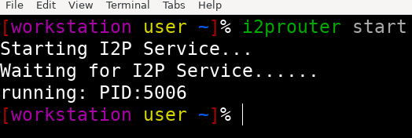
3. A popup going to ask you to open I2P Console in Tor Browser, Press on Yes
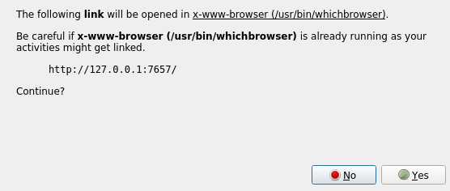
4. A setup wizard will show up. Complete it and then proceed to the I2P Console.
5. Go to Settings by either going to I2P Console config
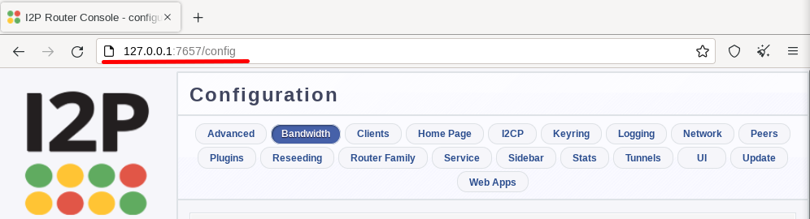
OR
Press on Settings
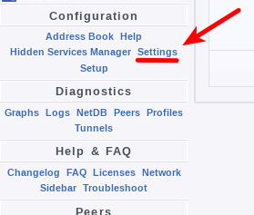
6. Press on Network
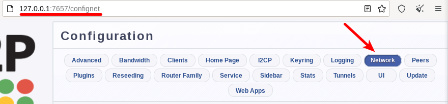
7. Change the network settings according to the images below (click
on Save Changes once you finished)
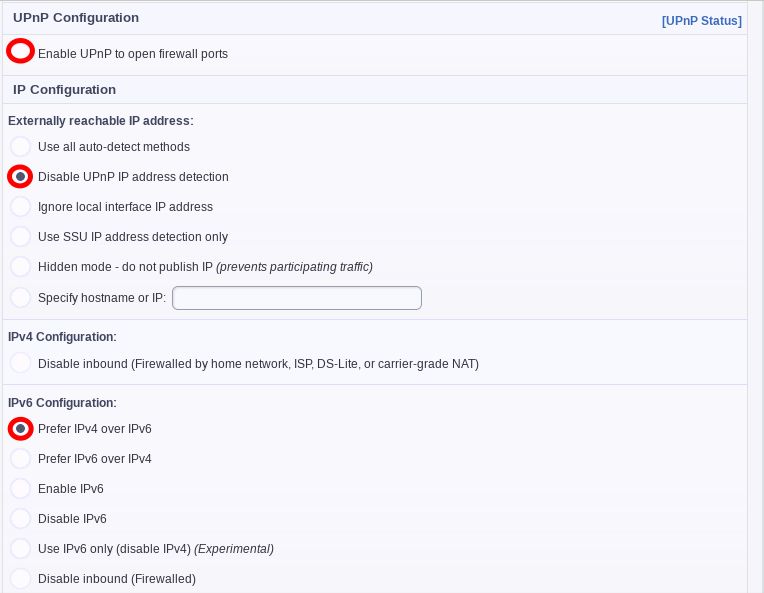
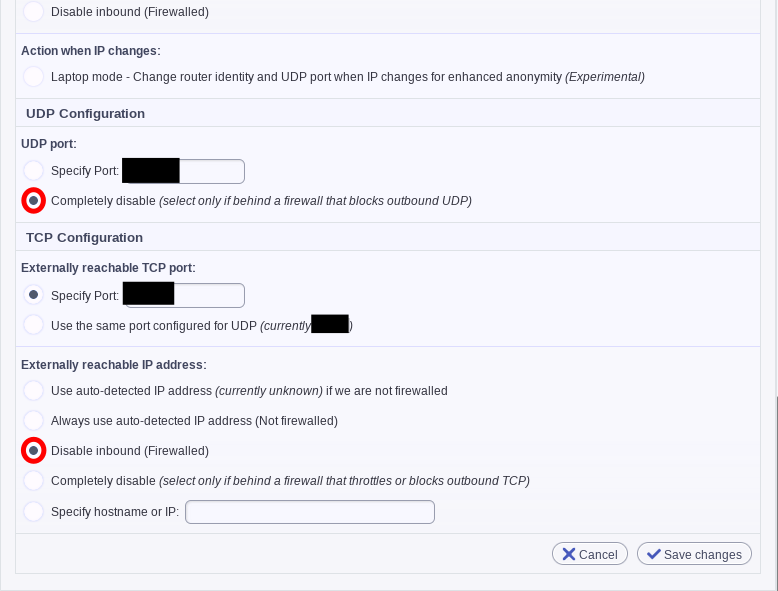
8. Go to Reseeding
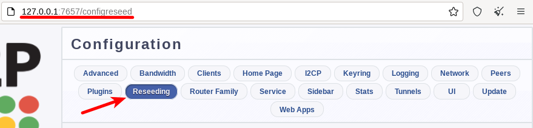
9. Change the reseeding settings according to the image below (click
on Save Changes once you have finished)
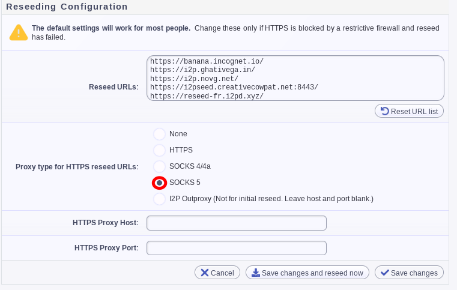
10. It is preferable to restart I2P from the Qterminal using the following command
i2prouter restart
11. Done! Now you can browse eepsites with I2P and access clearnet websites connected directly to Tor separately.
Notes
- Known Error Messages: If errors appear like: "Network: ERR-UDP Disabled and Inbound TCP host/port not set" or "ERR-Clock Skew of X min" or "WARN [Timestamper] .router.time.RouterTimestamper: Unable to reach any of the NTP servers ...", they can be safely ignored.
- Network Bootstrap Waiting Time: Once the Local Tunnels
(shared clients) section shows a green connection, I2P should be fully
functional and it is possible to browse eepsites like
http://idk.i2p. Some users report this process can be sorta lengthy and can take more than 10 minutes before the tunnels are stable/available. - I2P over Tor viewpoint by I2P upstream developers: I2P is functional over Tor but user should be aware that I2P developers do not really support it nor recommending it to be used over Tor. Just because it is functional does not mean it is supported. In other words I2P upstream developers will not change any I2P behavior just for the sake of connectivity issues of I2P over Tor because I2P is not designed to be running over Tor.
- Whonix pre-configuration: settings for I2P (because its over Tor) can be viewed here: https://github.com/Whonix/anon-apps-config/tree/master/var/lib/i2p/i2p-config
- Broken Onion Services: Setting
network.proxy.http-> set to127.0.0.1will break the connection to onion. services. Read more here. There is no known way to avoid this issue.
I2P Eepsites (I2P websites)
- Eepsites (I2P services) lists:
Figure: I2P Browsing in Whonix

Services
 The I2P supported
applications webpage warns that no guarantee can be provided about
the safety of compatible applications, plugins and services -- they must
be properly configured and might jeopardize anonymity due to design
faults or carelessness. Carefully vet these tools and research them
diligently beforehand.
The I2P supported
applications webpage warns that no guarantee can be provided about
the safety of compatible applications, plugins and services -- they must
be properly configured and might jeopardize anonymity due to design
faults or carelessness. Carefully vet these tools and research them
diligently beforehand.
Many interesting features and functionality are implemented for I2P in the form of stand-alone packages or plugins that can be optionally installed from their official plugin eepsite. Various tools are available for:
- blogging, forums and wikis
- decentralized file storage
- development tools
- domain naming
- file sharing
- network administration
- real-time chat
- web browsing
- website hosting
The instructions are simple to follow. The signing keys for these plugins are already built into the official I2P package and so are already white-listed. This is not a complete list.
For documentation about default port numbers of I2P plugins, see this page.
IRC
I2P has ready irc tunnel to be used and connect to their official irc servers go to:
http://127.0.0.1:7657/help#faq
If you scroll down you will find:
How do I connect to IRC within I2P?
A tunnel to the main IRC server network within I2P, Irc2P, is automatically started when the I2P router starts. To connect to it, tell your IRC client to connect to server: 127.0.0.1 port: 6668.
HexChat-like client users can create a new network with the server 127.0.0.1/6668, or you can connect with the command /server 127.0.0.1 6668. Different IRC clients may require a different command, consult the client documentation.
Practical practice:
- Hexchat inside whonix need specific small tweak:
- Go to Settings -> Preferences
- Then Network setup -> Proxy Server then follow the image instruction then press ok
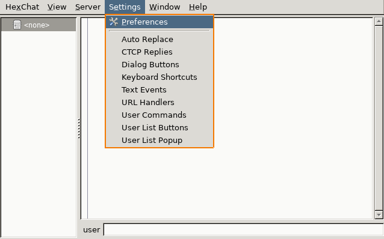
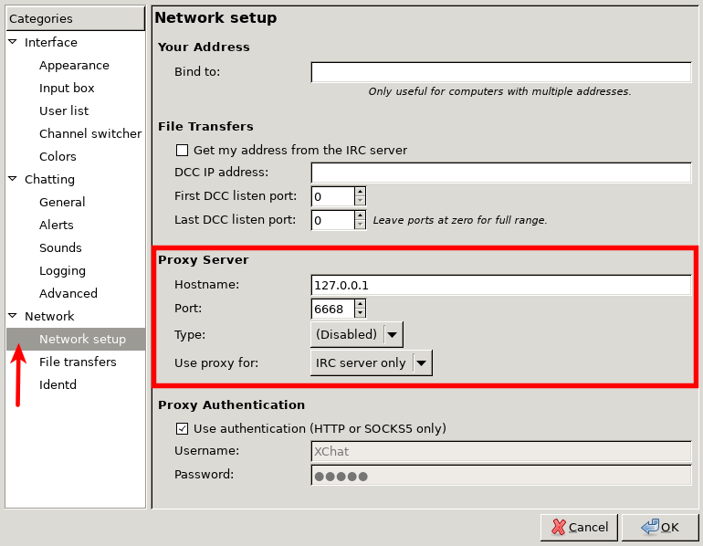
- Back to hexchat press on Hexchat -> Network list
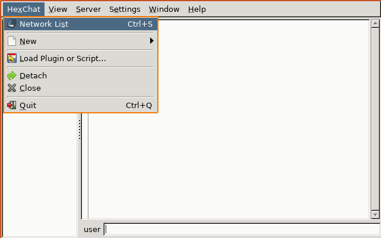
- Press on Add button and name it anything you like e.g I2P then hit Enter
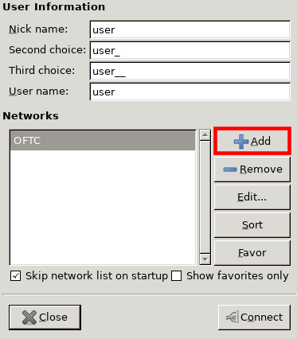
- Press on I2P then press on Edit... button
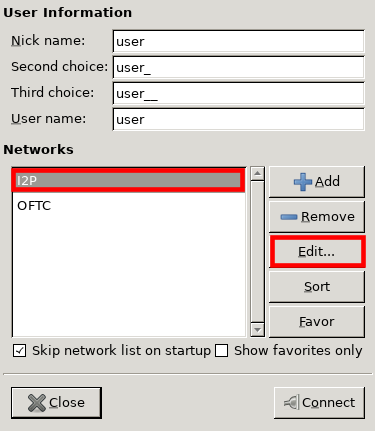
- Double click the top field to change it or press on it then press on
Edit button then change the value to
127.0.0.1/6668then hit Enter and press on close
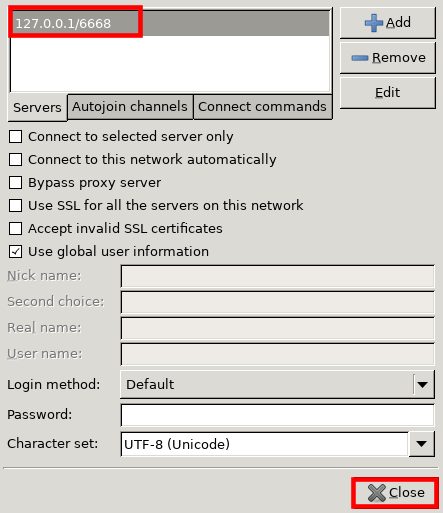
- Make sure I2P is the one highlighted then press on Connect button
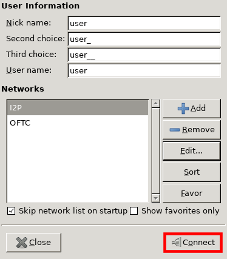
- Wait for couple of minutes then here you go
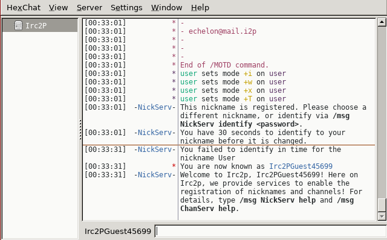
I2P-Bote
I2P-Bote is a serverless, encrypted email plugin that uses I2P for anonymity. Messages are stored in the distributed hash table (DHT) for 100 days, during which the recipient is able to download them.
To back up I2P-Bote data, copy the i2pbote folder inside the I2P config directory. On Unix systems the relevant directory is ~/.i2p/i2pbote, or /var/lib/i2p/i2p-config if running it as a daemon.
Compartmentalize activities and only use the I2P-Bote/Susimail VM snapshot for this purpose. Generally speaking, applications that run with a browser interface are vulnerable to a whole class of bugs, including cross-site request forgery (CSRF). [20]
Features
- themeable webmail interface
- user interface translated into many languages
- one-click creation of email accounts (called email identities)
- emails can be sent under a sender identity, or anonymously
- ElGamal, Elliptic Curve, and NTRU encryption
- encryption and signing is transparent, without the need to know about PGP
- delivery confirmation
- basic support for short recipient names
- IMAP / SMTP
RetroShare
RetroShare is a friend-to-friend (F2F) network that enables end-to-end encrypted communications, including general messaging, mail, forums, publish-subscribe messaging ('pubsub'), file exchange and even telephony. It can be used as an alternative to Syndie (see further below) and can be tunneled through I2P for enhanced anonymity.
Follow the steps in this guide to connect to others over I2P. Also see: I2P Hidden RetroShare Nodes.
To install RetroShare, see: Installation.
Syncthing
Syncthing is a popular libre software for file syncing based on the bittorrent protocol. [21] Syncthing provides several benefits: [22]
- cross-platform availability
- data is not stored on a central server, but only on your computer(s)
- all communication is secured with TLS and perfect forward secrecy
- every node is identified by a strong cryptographic certificate
- a completely open protocol -- open source, open development and open discourse
- portable and simple to use Web GUI
It is possible to tunnel Syncthing traffic over I2P as shown in this guide. [23]
To install Syncthing, run.
sudo apt install syncthing
Syndie
Syndie is I2P's distributed (decentralized) forum software, allowing asynchronous conversations between anonymous participants. It was the focus of I2P's creator shortly before he ceased public activity. It supports single and multiple author modes, adjustable visibility of posts and post moderation. Syndie features its own minimalist and secure reader to protect against browser exploitation. In 2018, Syndie was being rewritten in another programming language to provide a more modern and simple interface, along with basic image rendering. [24]
A key benefit of Syndie is that unlike centralized forums, it cannot be easily taken offline via denial of service attacks or administrative action, and there is no single point to monitor group activity. Offline forum participation is possible, by 'syncing up' any accumulated changes when it is convenient (days, weeks or even months later). In addition to simple text messages, entire webpages or the full content of sites can be packaged into a single post, which can even be browsed offline.
The Syndie Technical Features section notes: [25]
On the whole, Syndie works at the *content layer* - individual posts are contained in encrypted zip files, and participating in the forum means simply sharing these files. There are no dependencies upon how the files are transferred (over I2P, Tor, Freenet, gnutella, bittorrent, RSS, usenet, email), but simple aggregation and distribution tools will be bundled with the standard Syndie release.
To install Syndie, run.
sudo apt install syndie
Torrent
Undocumented due to Tor network capacity concerns, see File_Sharing#The_Tor_Project_Opinion and forum discussion i2p in Workstation - torrenting and the Whonix i2p guide.
ZeroNet
Unfortunately, I2P is not yet natively supported as a tunneling option in ZeroNet. No real progress has been made towards this goal for years; see footnotes to follow developments. [26] [27]
Installing I2P on Whonix-Gateway
It is possible to run I2P and Tor simultaneously on Whonix-Gateway:
user->Tor->Internet; anduser->I2P->Internet
Users who are interested in this configuration should follow the detailed instructions found here.
This configuration is untested by Whonix developers and it is
considered experimental. Also, Whonix developer HulaHoop has noted it is
difficult to have a preconfigured Tor Browser for accessing
.i2p domains and other non-clearnet top-level domains, as
well as optimizing I2P operations when tunneled over Tor.
For further information and to report successes/failures of this approach, refer to the development discussion and old development discussion.
Development
This chapter is for developers for informational purposes only. Users can skip it.
Whonix integration:
- https://github.com/Whonix/anon-apps-config/blob/master/var/lib/i2p/i2p-config/router.config
- Tor Browser Customization using user.js (for example for i2pbrowser)
- development discussion
- old development discussion
Footnotes
- https://geti2p.net/en/about/intro
- https://geti2p.net/en/research
- Currently working with both sun and kaffe; gcj support is planned for later.
- https://geti2p.net/en/comparison/tor
- https://twitter.com/i2p/status/756952247662239744
- https://geti2p.net/sv/docs/how/network-database
- I2P documentation is lacking in describing these features, but there are plans to improve the situation.
- https://twitter.com/i2p/status/756948810790821888
- This should make it more difficult for adversaries to compromise the relevant information.
- Making it harder for adversaries to sample for attack purposes.
- Tor2web is a project which allows Internet users access to Tor Onion Services without Tor Browser.
- This sounds worse than it really is because very few people are expected to use I2P over Tor. Further, I2P itself offers this option. It is not like a leeching mod.
- https://www.reddit.com/r/i2p/comments/579idi/warning_i2p_is_linkablefingerprintable/
- Using Qubes UpdatesProxy (
http://127.0.0.1:8082/) because Qubes Templates are non-networked by Qubes default and therefore require UpdatesProxy for connectivity. (APT in Qubes Templates is configured to use UpdatesProxy by Qubes default.) - Even more secure would be to download the key Disposable and then
qvm-copyit to the Qubes Template because this would avoidcurl's attack surface but this would also result in even more complicated instructions. - Even more secure would be to display the key in another Disposable
because this would protect the Template from
curl's andgpg's attack surface but this would also result in even more complicated instructions. - Minor changes in the output such as new uids (email addresses) or newer expiration dates are inconsequential.
- https://forums.whonix.org/t/apt-repository-signing-keys-per-apt-sources-list-signed-by/12302
- Except in the case of YaCy, which needs internet access.
- * broken link: https://chaoswebs.net/blog/2016/12/01/Exploiting-I2P-Bote/ * broken link: https://chaoswebs.net/blog/2016/10/15/Stealing-Your-I2P-Email/
Syncthing is a continuous file synchronization program. It synchronizes files between two or more computers and replaces proprietary sync and cloud services with something open, trustworthy and decentralized. Your data is your data alone and you deserve to choose where it is stored, if it is shared with some third party and how it's transmitted over the internet.
- https://syncthing.net/
- This guide is also reposted here.
- https://i2pforum.net/viewtopic.php?f=25&t=9
- https://syndie.de/features.html
- https://github.com/HelloZeroNet/ZeroNet/issues/57
- https://github.com/HelloZeroNet/ZeroNet/issues/45